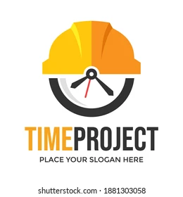

My First Portfolio
Commodity News
What Does The Site Do?
Allows the user to pick a category of commodities and displays a selection of commodities from this category Presents the current prices of the commodities for users to refer to Presents current business news in Australia to directly compare the commodity prices
Development
Difficulty in understanding why commodity prices such as petrol were changing prices so drastically We wanted to be able to see current news events that may influence prices, such as the war in Ukraine and other significant events.
Project Management System
What Does The Site Do?
☑ Created a project management system to work for both staff and employees ☑Allows users to create job requests and then view jobs and time entries. ☑ This allows business to have an interaction between both customers and admin users.
Development
Project Management System was create as a novel and useful web page; to solve a real world problem. To control the workflow management of a business and save admin time. it provides a simple user interface to allow users to manage their time entries and also allow customers to create jobs for employees to work on.
Makeup Artist Juanita.com
Web page created for a Makeup up artist. It is a mobile phone compatible web page, with fast loading times, appears and behaves consistently across all major browsers such as Chrome, Internet Explorer, Firefox, Safari and Opera. The page allow user to book appointments and pay for a deposit to book appointment, customers can buy goods like make up and beauty products from the website. The page uses correct labels for all fields, follow good form design principles, keeps the number of fields to a minimum, offer tooltips and suggestions and display on-screen message on completion. The page is accesible to all users including blind, disable or elderly. The page also has good search feature, multiple ways to explore content e.g. top 10, most rates, most popular, etc. Custom 404 Page, good internal linking, informative header and footer.

Sushy Train Choo-Choo.com
Web page created for a Sushi restaurant. It is a mobile phone compatible web page, with fast loading times, appears and behaves consistently across all major browsers such as Chrome, Internet Explorer, Firefox, Safari and Opera. The page allow user to book meal times and includes the restaurant menu manu. The page uses correct labels for all fields, follow good form design principles, keeps the number of fields to a minimum, offer tooltips and suggestions and display on-screen message on completion. The page is accesible to all users including blind, disable or elderly. The page also has good search feature, multiple ways to explore content e.g. top 10, most rates, most popular, etc. Custom 404 Page, good internal linking, informative header and footer.

Bellbowrie Family Clinic.com
Web page created for a family clinic. It is a mobile phone compatible web page, with fast loading times, appears and behaves consistently across all major browsers such as Chrome, Internet Explorer, Firefox, Safari and Opera. The page allow user to chedule appointments with doctors. The page uses correct labels for all fields, follow good form design principles, keeps the number of fields to a minimum, offer tooltips and suggestions and display on-screen message on completion. The page is accesible to all users including blind, disable or elderly. The page also has good search feature, multiple ways to explore content e.g. top 10, most rates, most popular, etc. Custom 404 Page, good internal linking, informative header and footer.